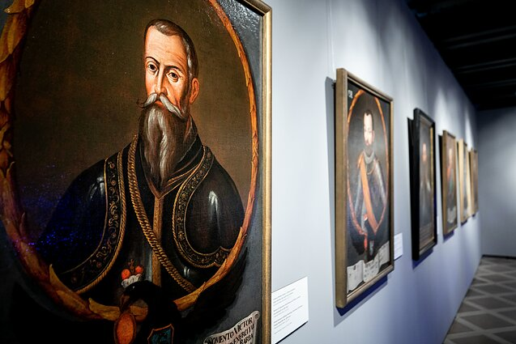
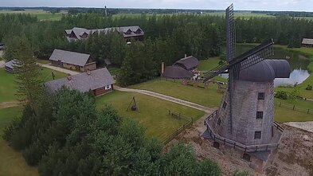

Viena ar daug lietuviškų virtuvių?
Pristatydami tradicinę lietuvišką virtuvę svečiams iš kitų kraštų ar diskutuodami tarpusavy, dažnai ją
suvokiame kaip vienalytę. Tačiau dera prisiminti, kad tradicinė lietuviška virtuvė keitėsi bėgant amžiams,
skirtingų socialinių sluoksnių atstovai taip pat maitinosi labai skirtingu maistu, pagaliau ir seniau, ir
dabar skirtinguose Lietuvos regionuose apstu savitų patiekalų ir įvairuojančių to paties patiekalo ruošimo
būdų.
Pastarąjį dalyką kuo puikiausiai išnaudoja tie, kas užsiima kaimo turizmo verslu – juk tradiciniai
lietuviški regioniniai patiekalai gali tapti puikiu masalu, pritraukiančiu ir senovinių valgių pasiilgusių
tautiečių, ir autentiškumą vertinančių užsieniečių.
Ką valgė Lietuvos didieji kunigaikščiai?
Neretai guodžiamės, kad lietuviai – žemdirbių tauta, nuo pat senovės besimaitinusi sunkiais ir gana
neįmantriais valgiais. Tačiau užtenka žvilgtelti į senųjų Lietuvos valdovų virtuves, ir mitas apie skurdų

lietuvių maisto racioną akimirksniu išgaruoja. Įvairiuose istoriniuose šaltiniuose galima rasti daugybę
pasakojimų apie kunigaikščių rengtas prabangias puotas, kuriose „upėmis liejosi midus“, o „stalai lūžo nuo
gausybės valgių“. Ir tai nėra tik gražūs pasakymai. Lietuvos didieji kunigaikščiai bei kiti aukštakilmiai
asmenys giminiavosi ir bendravo su garsiausiomis Europos imperatoriškomis šeimomis, tad ir Lietuvos valdovų
valgyti patiekalai taip pat buvo karališki. Ypatingu virtuvės turtingumu garsėjo Radvilų giminė.
Kunigaikščių virtuvių sandėliuose netrūko nei savų, nei atsivežtinių produktų. Valgyta įvairiausių kruopų
(ryžių, grikių), daržovių (kopūstų, morkų, burokų, svogūnų, ropių), itin mėgstami buvo įvairiai paruošti
grybai, iš svečių šalių atkeliaudavo tokių egzotiškų prieskonių kaip cinamonas ar imbieras. Prieš kelis
šimtus metų būdavo kepami taurai, elniai ir stirnos, šernai ir kiškiai, žąsys, karveliai ir strazdai bei
daugybė kitokių gyvūnų ir paukščių. Upės knibždėjo žuvų, tad jų valgyta daugybė rūšių ir kuo įmantriausiai
paruoštų. Valdovai gėrė puikius atsivežtus vynus, mėgavosi egzotiškais vaisiais ir įvairiais retais
delikatesais.
Paprastumas – svarbi lietuviškos virtuvės nuostata
Eilinių kaimo ar miesto žmonių virtuvė, žinoma, negalėjo lygiuotis su tuo, ką valgė kilmingieji. Daugelis
kaimo ir miesto žmonių valgė gana paprastus valgius, o retesnių produktų – nebent per šventes. Beje,
tradicinių lietuviškų patiekalų paprastumas nebuvo sąlygotas vien tik nepritekliaus, atvirkščiai, valgių
paprastumą galima įvardyti kaip vieną svarbiausių tradicinės lietuviškos nuostatų.
Lietuviai nuo senų laikų valgė daug iš grūdų gaminamų valgių:

iš rugių buvo kepama duona, populiarios buvo miežinės kruopos ir miltai
(tik per šventes buvo kepami kvietinių miltų pyragai), grikius augino daugiausiai dzūkai. Populiariausia
mėsa buvo kiauliena, kiek retesnė – aviena. Paukštiena ir kiaušiniai nebuvo kasdienis maistas, dažniausiai
tai buvo parduoti skirti produktai. Vartota itin daug pieno produktų – saldaus ir rauginto pieno, varškės,
sūrio, grietinės.
Populiariausios daržovės buvo kopūstai, ropės (iki paplintant bulvėms), burokai. Beje,
bulvės į Lietuvą atkeliavo maždaug prieš 200–250 metų, o plačiau paplito maždaug prieš 100. Agurkai, porai,
salotos dažniausiai auginti dvaruose, o pomidorai Lietuvoje išpopuliarėjo tik po I-ojo pasaulinio karo.
Cukrus atsirado tik XIX a., bet paprastų žmonių buvo vartojamas retokai. Jį pakeisdavo medus, buvęs taip pat
šventinis, nekasdienis produktas.
Ilgainiui pamiršus lietuviško midaus gaminimo paslaptis, tarp paprastų
žmonių itin išpopuliarėjo alus – jis buvo gaminamas visoje Lietuvoje, o intensyviausiai – Vidurio ir Šiaurės
Rytų dalyje. Buvo geriama beržų ir klevų sula (šviežia ir rauginta), gira. Arbata ir kava gertos rečiau;
pirmoji būdavo iš žolelių, o kavą gamindavo iš skrudintų gilių, miežių, kviečių, kitokių grūdų.